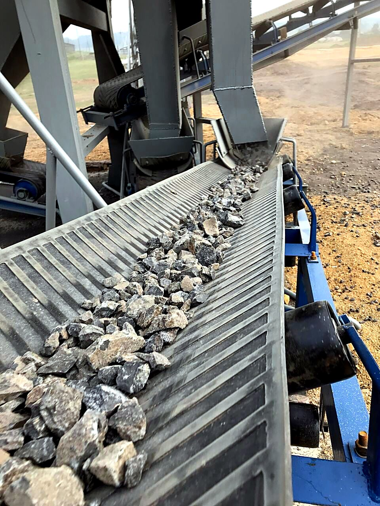
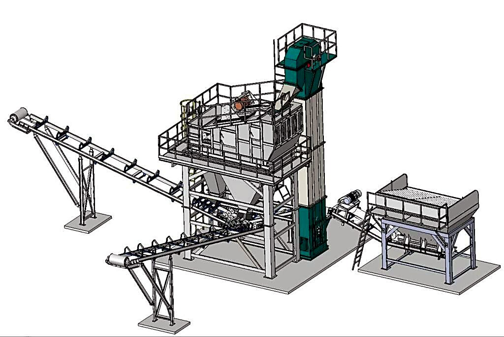

Щебень нужной фракции
Подберём дробильно-сортировочный комплекс под ваше сырьё, фракции и площадку. Поставка, шеф-монтаж, пусконаладка и сервис в одной компании.
- Серии
- PE, PY, DP, XHP
- Производительность
- 100–450 т/ч
- Фракции
- 0–70 мм
- Вибропитатели
- до 1600 т/ч

Комплекс под вашу задачу
- Подбор под задачу
- Состав линии зависит от исходного сырья, требуемых фракций и условий площадки. Подбираем комплекс под конкретное производство, а не из каталога.
- Оборудование напрямую от производителей
- Поставляем дробильное и сортировочное оборудование напрямую от LIMING, ZENITH/SBM, DINGSHENG и VANGUARD.
- Мобильные решения
- В линейке мобильные дробильно-сортировочные комплексы, включая Dingsheng TAS380, WLF и WHPS — для работ на нескольких площадках.
- Четыре типа дробилок
- Щековые, конусные, роторные дробилки и дробилки VSI. Тип подбирается под сырьё и требуемый продукт.
- Собственное производство
- Изготавливаем конвейеры, шнеки, силосы и вибропитатели производительностью до 1600 т/ч.
- Запуск на объекте
- Шеф-монтаж и пусконаладка входят в перечень услуг. Состав работ согласуется под конкретный проект.
Подойдёт ли под задачу?
Выберите сырьё, производительность и фракцию — соберём предварительную цепочку оборудования за минуту.
- Первичное дроблениеЩековая дробилка PE-750×1060
- Вторичное дроблениеКонусная гидравлическая DP-200
- СортировкаГрохот 3YZK1860, 2 деки
- ПродуктФракция 5–20 мм
Подбор на странице предварительный: точный состав, компоновку и стоимость считает инженер в КП.
Получить этот расчёт в КП| Задача | Цепочка |
|---|---|
| Гранит, 100–150 т/ч | PE-600×900 → DP-100 → 3YZK1548 |
| Гранит, 250–450 т/ч | PE-750×1060 → DP-200 → 3YZK1860 |
| Известняк, 100–250 т/ч | PE-600×900 → 3YZK1860 |
| Фрезерованный асфальт | PE-600×900 → 3YZK1860, возврат в АБЗ |
Что именно приедет на площадку
Состав поставки зафиксирован в договоре: спецификация — приложение к контракту, а не письмо в мессенджере.
| Позиция | Состав примера |
|---|---|
| Первичное дробление | Щековая дробилка PE-600×900 |
| Вторичное дробление | Конусная дробилка DP-100 |
| Сортировка | Грохот 3YZK1860 |
| Транспортировка | Конвейеры 650 и 800 мм, 4 шт. |
| Управление | Шкаф управления и автоматика |
| ЗИП | Комплект на 12 месяцев эксплуатации |
| Документы | Паспорт, схемы, инструкции на русском |
Состав — пример линии 150 т/ч для гранита; вашу конфигурацию инженер считает под сырьё и площадку.



Кто запустит — наши инженеры
- Шеф-монтаж: надзор сборки механической части по схемам завода.
- Надзор электромонтажа и подключение систем управления.
- Холодный пуск и проверка узлов под нагрузкой без сырья.
- Вывод на проектную производительность по сырью заказчика.
- Обучение смен заказчика на рабочей линии.
- Сдача линии с актом выхода на производительность.
Инженер СДС говорит с заводом на китайском, английском и корейском и решает вопросы на монтаже сам — без переводчика и переписки через посредника.
Запуски дробильных комплексов
- 2012 Усть-Кут: шеф-монтаж и пусконаладка мобильного ДСК SAMYOUNG 250 т/ч.
- 2014 Дробильно-сортировочный комплекс 150 т/ч.
- 2017 Щековая дробилка PE.
- 2019 Визит на завод SBM/ZENITH с заказчиками, поставка ДСК 200 т/ч.
Первый мобильный ДСК мы запускали в Усть-Куте в 2012 году, затем поставили линии на 150 и 200 т/ч.
Отвечают инженеры
Как проходит подбор оборудования?
Обсуждаем задачу: тип производства, сырьё, требуемые фракции или продукт, условия площадки. На основе этого подбираем конфигурацию линии и формируем коммерческое предложение.
Кто выполняет монтаж и запуск?
Шеф-монтаж и пусконаладку выполняют наши инженеры на объекте. Оборудование выводится на рабочую производительность и передаётся заказчику.
С какими производителями вы работаете?
Дробление и сортировка: LIMING, ZENITH/SBM, DINGSHENG, VANGUARD. АБЗ и бетон: QUANCHENG, Echo Machinery, SINOROADER, DOM Machinery. Горелки и автоматика: A-TECH, EBICO, RIELLO, BALTUR, Honeywell, Siemens.
Расскажите задачу — вернём расчёт
Пришлите сырьё, нужные фракции и производительность — инженер вернёт предварительную конфигурацию линии и сроки поставки.
- Почта
- info@sdors.ru
- Офис
- Иркутск, ул. Рабочего Штаба, 1/7
- Часы
- пн–пт 9:30–18:00